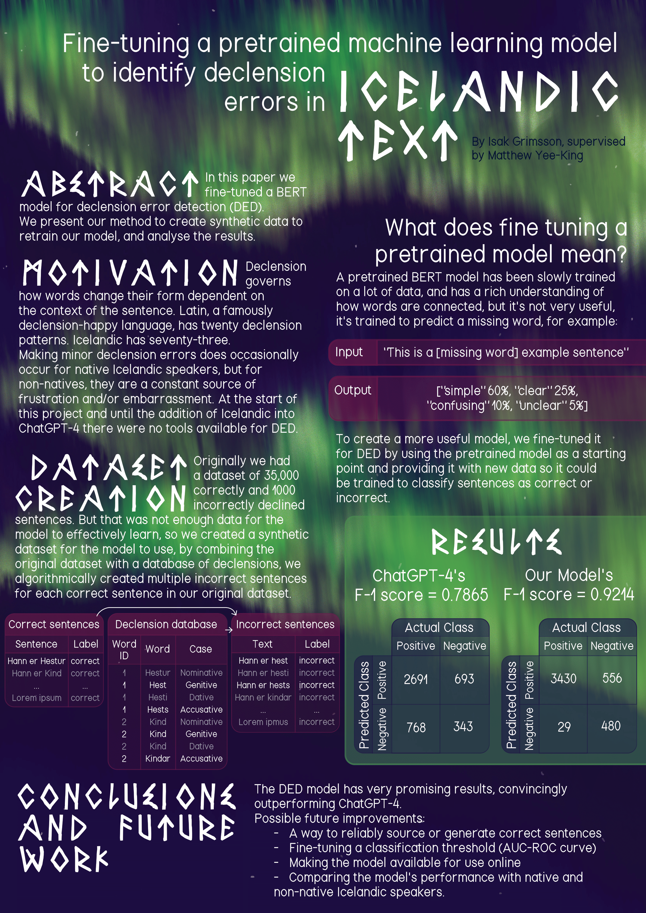

Fine-tuning a BERT model to detect declension errors in Icelandic Text
This was my final project of my bachelor degree, I'm proud to share that I recieved a mark of 94 for this project, as well out-performing ChatGPT, which makes it state of that art performance for this specific task, the final model is available on huggingface, and for those that are interested, the full paper is available here, below is a poster presentation of the project followed by a short writing about my favourite part of the project, synthetic dataset creation.
A quick preamble about declension
In order to understand how I constructed my data set, we need to talk briefly about declension, bear with me and I'll try my best to avoid going into the specifics of Icelandic grammar. For example Imagine that the word 'horse' has four forms (Horse, Horsey, Horser and Horsest), you would pick the correct form based on the context of the sentence, for example "I walk TO the horse","I walk AROUND the horse","I walk FROM the horser" or "I walk ON the horsest", the rules which governs the form a word takes are irregular, and choosing the right form can be thought of as a pattern recognition problem.
The important declension takeaway for this project
If we have a sentence where all the words are in their correct form (I walk to the horse), if you subsitute a single word in that sentence with one of it's other forms (horsey, horser, horsest) that sentence will be incorrect.
Synthetic dataset creation
In order to retrain the model to perform binary classification (sentences are either correct or incorrect), I needed a dataset of incorrect and correct sentences, a large dataset aswell, but a large dataset didn't exist. What did exist was a collection of proofread texts, that I scraped and filtered to create a new dataset of 35000 correct sentences and 1000 incorrect sentences. I combined this dataset with a 'Declension database' (a database of Icelandic words and their different forms). I put the 1000 incorrect sentences aside for testing (as well as 3500 of the correct sentences) and I used the remaining correct sentences to generate incorrect sentences as outlined below.
- For each correct sentence
- For each word in that sentence, search the declension database
- For each different form that exists, create a copy of the sentence with the word swapped out for its alternative form
Using this method, I managed to create multiple incorrect sentences for every correct sentence in my dataset, which resulted in a dataset large enough to train a state of the art declension error detection model.